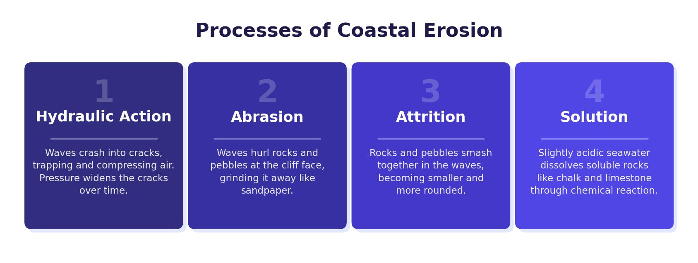

Weathering at the Coast
Weathering is the breakdown of rock where it stands. Unlike erosion, weathered material is not carried away by a moving force — it breaks down on the spot. Along the UK coastline, three types of weathering attack exposed rock.
Mechanical (Physical) Weathering
The most common type in the UK is freeze–thaw weathering. Water enters cracks in cliff faces. When the temperature drops below 0°C, the water freezes and expands by about 9%. This puts pressure on the rock. After many repeated freeze–thaw cycles, the rock shatters and fragments fall to the base of the cliff.
Chemical Weathering
Rainwater is naturally slightly acidic because it absorbs carbon dioxide from the atmosphere. When this weak acid reacts with rocks like limestone and chalk, it slowly dissolves the minerals within them. Over time, chemical weathering weakens the rock structure and changes its composition.
Biological Weathering
Plants and animals can physically break rock apart. Tree roots grow into cracks and joints, gradually widening them as the roots expand. Burrowing animals and nesting seabirds can also loosen rock. This is a form of mechanical weathering caused by living organisms.
The three types of weathering — mechanical, chemical and biological — often work together at the same time. This combined action speeds up the overall breakdown of coastal rock.

Mass Movement
Mass movement is the downhill movement of material under the force of gravity. It is especially common on coastlines where weathering weakens cliffs and waves undercut their base. There are four main types:
- Rockfall — fragments of rock break away from a steep cliff face, often triggered by freeze–thaw weathering. The fallen debris collects at the base as a scree slope.
- Landslide (sliding) — blocks of harder rock slide rapidly downhill along a flat surface. This happens when layers of rock become saturated and the upper layers slide over the layers beneath.
- Slumping (rotational slip) — saturated soil and weak rock slump along a curved surface. Rain soaks into the top of the cliff while waves undercut the base, causing a section to rotate and slip downward.
- Mudflow — very fine, loose material becomes saturated with water and flows down a slope as a liquid mass.
Waves
Waves are created by wind blowing across the surface of the sea. The size and energy of a wave depends on three factors: how strong the wind is, how long it blows for, and the fetch — the distance of open water over which the wind has blown. A longer fetch produces larger, more powerful waves.
Constructive Waves
Constructive waves are low, gentle waves that occur in calm conditions. They have a strong swash that pushes material up the beach and a weak backwash, so more material is deposited than removed. They build up beaches over time.
Destructive Waves
Destructive waves are tall, steep waves that occur in stormy conditions. They have a weak swash and a strong backwash, so more material is dragged away than deposited. They break frequently and are responsible for erosion along the coastline.
Constructive waves deposit material (strong swash, weak backwash). Destructive waves erode material (weak swash, strong backwash). Remembering which does which is essential for the exam.
Processes of Erosion
When destructive waves hit the coastline, they erode rock through four processes:
- Hydraulic action — the sheer force of the water crashes against the cliff. Air is trapped and compressed in cracks, and the pressure forces the cracks to widen and eventually break pieces of rock away.
- Abrasion — waves pick up rocks and pebbles and hurl them at the cliff face like sandpaper, wearing it away over time.
- Attrition — rocks carried by the waves bang into each other, breaking into smaller, rounder pieces.
- Solution — some rock types (such as limestone and chalk) are slowly dissolved by the slightly acidic seawater.
The four processes of erosion — hydraulic action, abrasion, attrition and solution — are exactly the same in both coastal and river environments. In your exam, you can use the same terminology. The only difference is that at the coast, erosion is driven by wave energy rather than the flow of a river channel.
Transportation at the Coast
Once material has been eroded, it is transported along the coastline. Waves move sediment using the same four methods as rivers:
- Traction — large boulders are rolled along the seabed by the force of the waves.
- Saltation — smaller pebbles are bounced along the seabed.
- Suspension — fine sand and silt particles are carried within the water.
- Solution — dissolved minerals are carried invisibly in the seawater.
Longshore Drift
Longshore drift is the main process that moves sediment along a stretch of coastline. Waves approach the shore at an angle, pushed by the prevailing wind (in the UK, this is usually from the south-west). The swash carries sediment up the beach at this angle. The backwash then drags it straight back down the beach at 90 degrees, pulled by gravity. This repeated zigzag action gradually moves material along the coast.
Longshore drift moves sediment in a zigzag pattern. The swash pushes material at an angle (following the prevailing wind), and the backwash pulls it straight back (at 90° to the shore). In the UK, prevailing south-westerly winds typically move sediment from west to east along the south coast.
Deposition
Deposition occurs when the sea loses energy and drops the sediment it has been carrying. This is likely to happen when waves enter a sheltered area such as a bay, when the water becomes shallow, when there is little wind, or when the swash is stronger than the backwash (constructive waves).
Bays are sheltered areas between headlands. When waves enter a bay, they spread out and lose energy. This means the waves can no longer carry their load, so they deposit sediment. Over time, this builds up to form a beach. Larger material such as pebbles and shingle is deposited higher up the beach by high-energy storm waves, while finer sand is deposited closer to the water line by lower-energy waves.